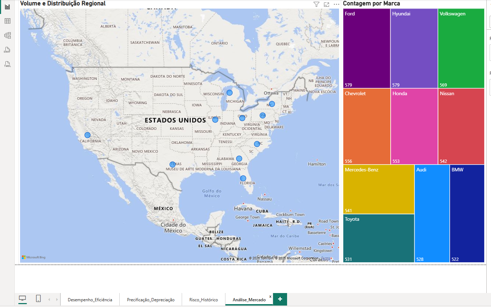
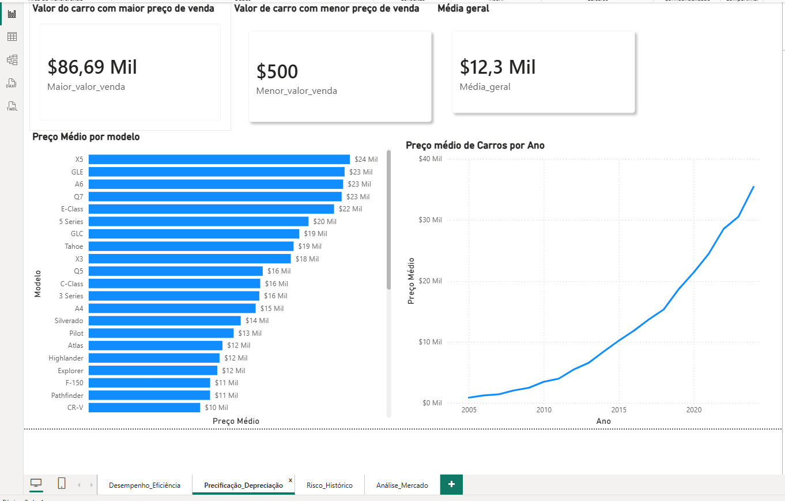

Análise do Mercado automotivo — Dashboard Power BI
Este projeto demonstra a aplicação prática de linguagem SQL para engenharia de recursos, limpeza de dados (data cleaning) e extração de métricas de negócios a partir de um banco de dados automotivo complexo. Os gráficos e relatórios visuais foram acoplados apenas como um complemento de Business Intelligence para traduzir o resultado das consultas estruturadas em tomadas de decisão executiva.